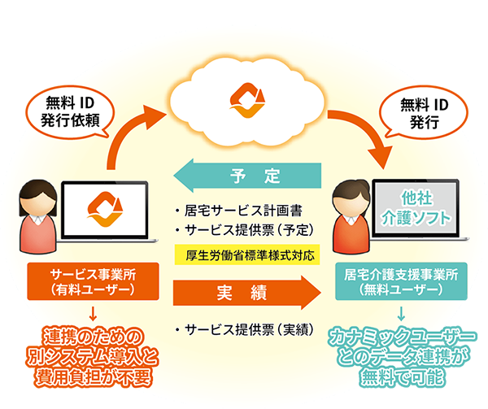
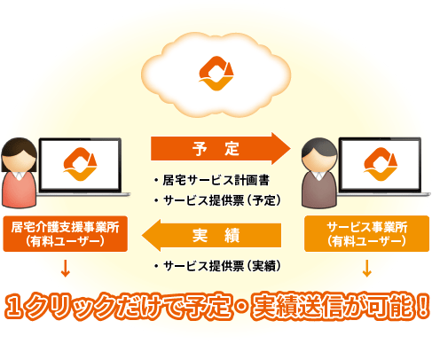
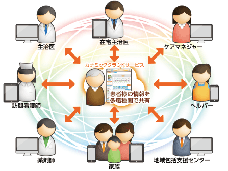
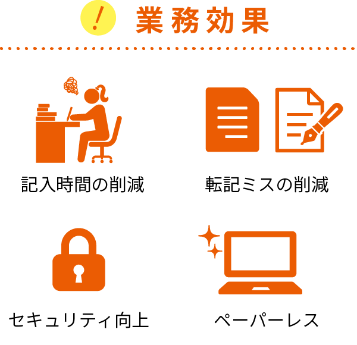
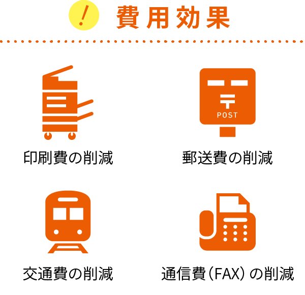

厚生労働省に採択された
カナミックのケアプランデータ連携介護ソフト
2024年の介護報酬改正により、居宅介護支援費Ⅱの算定要件には国民健康保険中央会が運用する「ケアプランデータ連携システム」の活用及び事務職員の配置が要件で定められました。「居宅介護支援費に係るシステムの公募」では「ケアプランデータ連携システム」と同等の機能とセキュリティを有するシステムにおいて「ケアプランデータ連携システム」を活用しているものと見なす取り扱いとすることで公募されております。
カナミッククラウドサービスは地域包括ケアシステムの一環として多職種連携を支援する情報共有システムを提供しており、高いセキュリティ環境下で多職種連携並び、ケアプランデータ連携を提供しており、これが評価され本公募に採択されました。
・厚生労働省 居宅介護支援費に係るシステムの公募について
・介護保険最新情報 令和6年度介護報酬改定に関するQ＆A（Vol.13）（令和7年4月7日）」の送付について
「異なる介護ソフトとの連携（ケアプランデータ連携）」は
カナミックだけでも可能！
カナミックにはケアプランデータ連携が標準機能として備わっています
カナミックはデータ連携に強いクラウドサービスです。 「異なる介護ソフト間でのケアプランデータ連携」にも、もちろん対応しています。 厚生労働省標準様式に対応しており国民健康保険中央会のケアプラン連携システムを利用できます。 またカナミックユーザー様の連携先は無料でカナミックの連携機能を利用でき、ユーザー様も連携のための別途費用が不要です。

カナミッククラウドサービス
導入のメリット
カナミックユーザー同士の連携
カナミッククラウドサービスのユーザー同士のデータ連携の場合、1クリックだけで予実送信が可能です。日本全国のサービス事業所のデータベースを保有しており、サービス事業所マスターの情報入力が必要ありません。

地域包括ケア（医療・介護多職種他法人間連携）
カナミッククラウドサービスの情報共有機能は各専門職だけでなく、患者様本人とご家族まで含めた連絡・連携をリアルタイムで行えます。業務システムユーザーと連携ユーザーは無料でご利用可能で地域包括ケアに寄与します。

データ連携で業務効率化
カナミックにお任せ下さい
① 異なる介護ソフト間の連携
② カナミックユーザー同士の連携
③ 地域包括ケア（医療・介護）連携
カナミックではお客様の業務や環境に適した形での連携方法をご提案しております。
 
カナミッククラウドサービスはオールインワンの介護ソフトです
■債権管理
会社概要
会社名
株式会社カナミックネットワーク
Kanamic Network Co.,LTD
設立
2000年10月20日
上場
東京証券取引所 プライム市場
証券コード 3939
資本金
3億2,412万円(2016年11月16日時点)
会社名
株式会社カナミックネットワーク
Kanamic Network Co.,LTD
プライバシーマーク認定番号
10821234(09)